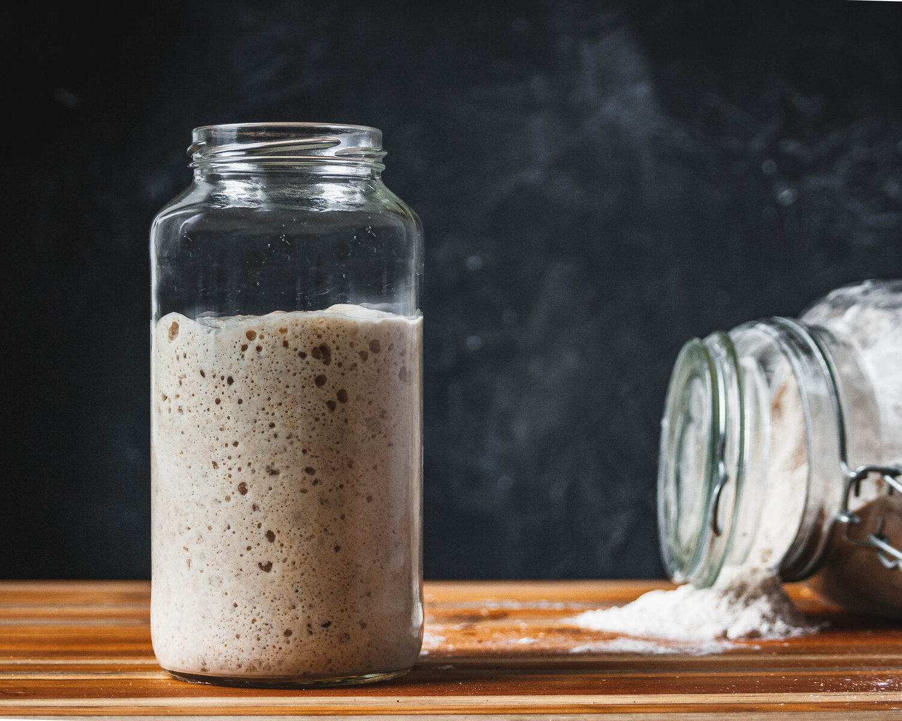

Sourdough Starter

Description
At it's essence a good bread only requires 3 ingredients:
flour, water, and salt. For the bread to rise, yeast is required -
but not necessarily the dry yeast from the groceries store. We
can harvest natural yeast from the environment and cultivate it
by just mixing flour and water, which is also called a Sourdough Starter.
This recipe teaches you how to set up such a Sourdough Starter.
Ingredients
- Whole wheat flour: 30g
- Water: 30g
Steps
- Mix flour and water either in the morning or at night.
-
24 hours later: Move 10g of the mixture over to a new jar
and add another 10g of flour and 10g of water. This is called
feeding the Sourdough Starter.
-
From now on repeat Step 2 every 12 hours until the Starter
starts doubling in size within 6 hours after feeding.